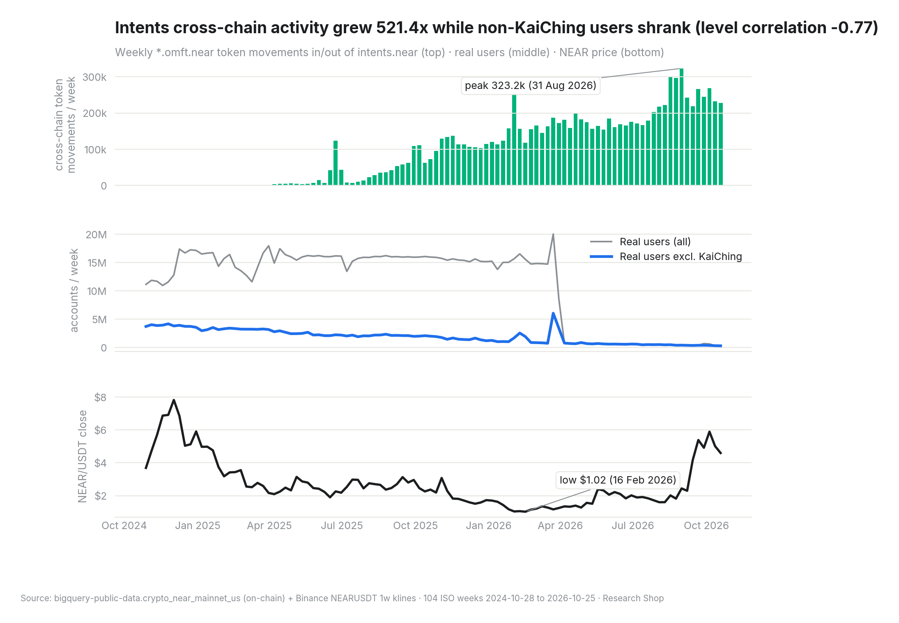
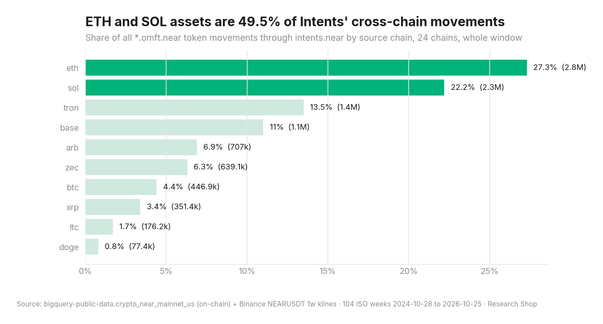
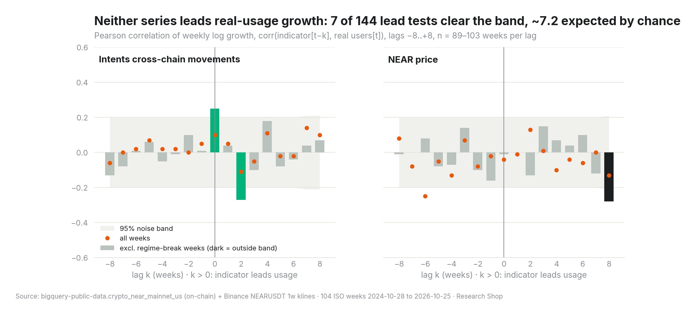
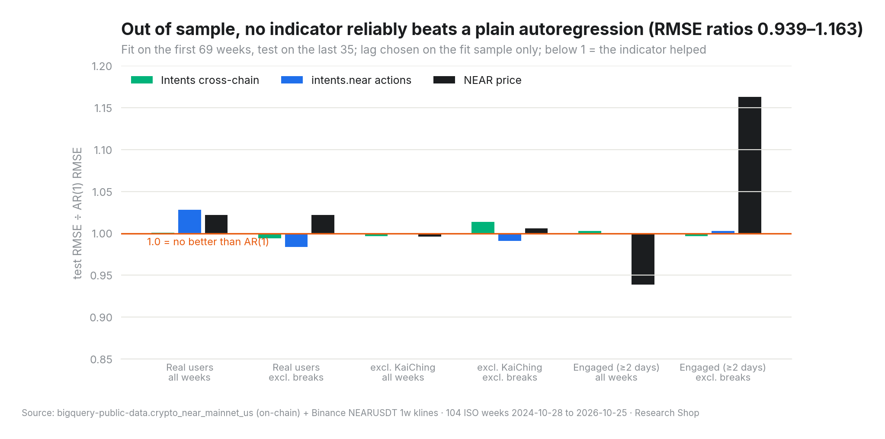
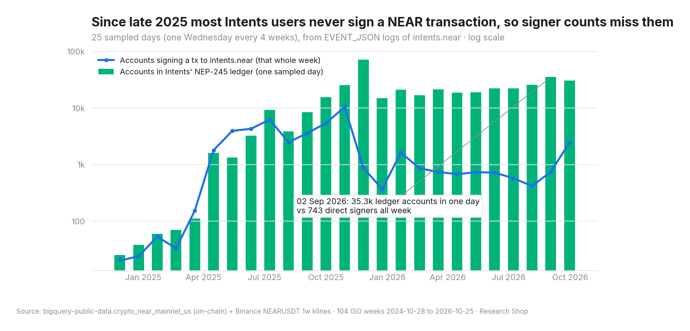
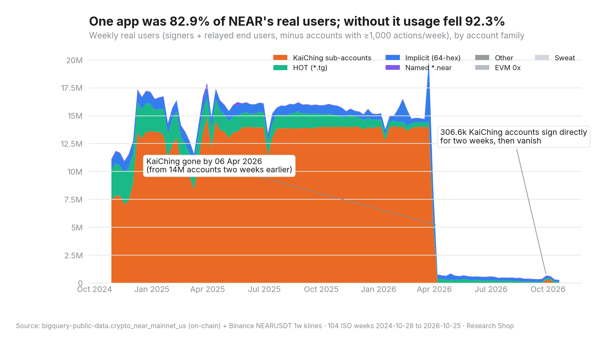

Is NEAR Intents volume a better leading indicator of real usage than the NEAR price?
Claim
The data does not support the hypothesis. We tested whether weekly cross-chain volume through NEAR Intents predicts weekly growth in real NEAR users better than the NEAR price does. Neither one leads real usage. Across 144 lead tests (1 to 8 weeks ahead), 7 clear the 95% noise band, about the 7.2 that chance alone would produce. Out of sample, adding either indicator to a simple autoregression changes forecast error by less than 3% in 16 of 18 cases.
What the data does show is more useful for an investor. Intents and NEAR's own user base are moving in opposite directions. Intents cross-chain token movements went from about 489 a week (first quarter of the window) to 255,117 a week (last quarter), 521.4× higher. Over the same quarters, real users outside one dominant app fell from 3,687,639 to 385,275 a week. In levels the two series correlate at -0.77 (103 weeks). Intents is growing a different population: users whose activity is executed by solvers and relayers, most of whom never sign a NEAR transaction. Signer-based "network usage" can't see them, so it can't be led by them.

Evidence for
- Intents is a large, steadily growing activity stream, unlike price. 10,210,586 cross-chain token movements (PoA-bridge
*.omft.neartokens in and out ofintents.near) across 24 source chains, peaking at 323,195 in the week of 2026-08-31. ETH-chain assets were 27.3%. Over the window the NEAR price went from 3.688 to 4.596 USDT through a low of 1.022 (week of 2026-02-16), so price tells you little about activity. (q2, a_chains, a_weekly) - Intents co-moves with usage; price doesn't. Excluding regime-break weeks, same-week growth in Intents cross-chain movements correlates with real-user growth at 0.25 (n = 98, noise band ±0.2). The rank correlation over all weeks is 0.33 (n = 102). Price's same-week correlation is -0.01 (n = 99). That makes Intents a weak coincident indicator. It still isn't a leading one. (a_xcorr)
- The strongest positive lead is Intents-related. Actions executed on
intents.nearlead real-user growth by 5 weeks at 0.33 (n = 94, excluding break weeks). It's 1 of 48 lead tests for that indicator, so it may be noise. (a_xcorr) - Intents has a real user base of its own. On the last sampled day (2026-09-30), 30,607 accounts appeared in Intents' internal multi-token ledger, and the peak sampled day (2025-11-26) had 71,159. (q3, a_nep245)


Evidence against
- No lead at any horizon. Intents cross-chain movements produce 1 significant lead out of 48 tests, and it's negative (lag 2, -0.27, n = 96). Price produces 5 of 48, mostly negative (strongest: lag 8, -0.28, n = 91). The total of 7 of 144 matches the 7.2 expected by chance. (a_xcorr, a_facts)
- No out-of-sample gain. We fit on the first 69 weeks and tested on the last 35, picking the lag on the fit sample only. Intents cross-chain movements beat the plain autoregression in 3 of 6 fits, but the best gain was 0.6%. Price beat it in 2 of 6, with ratios from 0.939 to 1.163, which is unstable. (a_oos)
- The levels diverge. Intents grew 521.4× while non-KaiChing users fell 92.3% from the first week to the last (3,699,019 to 284,872). A level correlation of -0.77 between two trending series is spurious in both directions. It does rule out "Intents tracks usage". (a_weekly, a_facts)
- Most Intents users are invisible to signer counts. On 2026-09-02, 35,265 accounts touched the Intents ledger in one day, while 743 non-heavy accounts signed a transaction to
intents.nearin that entire week. Before late 2025 the two were comparable, and after that they separated. Solvers and relayers now submit nearly all Intents activity. (a_nep245) - "Real usage" is dominated by one app. KaiChing sub-accounts (
*.users.kaiching) were 82.9% of all real-user account-weeks. That's 14,799,810 at the peak (week of 2025-03-31), 82.4% of that week. They vanished between 2026-03-23 (13,992,107) and 2026-04-06 (0). The early-October signer surge is also KaiChing: 306,611 KaiChing accounts signed directly in the week of 2026-09-28 (206,281 of them new) and 253,430 the next week, then 0. Total signers went 153,530 → 457,768 → 111,463. Any indicator "predicting" these steps would be predicting one app's operations. (q1, a_facts)



What would change our mind
- An account-level funnel. Suppose the full Intents ledger (not a sample) showed that accounts first active in Intents later become NEAR signers or relayed users more often than other new accounts. Intents would then lead usage at the account level, even though the aggregates show no lead. This needs a full scan of
intents.nearlogs (dry run ≈ 2.4 TB, above this project's budget). - A clean post-KaiChing window. After 2026-04-06 there is no KaiChing regime to distort the series. If a year of that cleaner data shows Intents growth leading non-KaiChing user growth, the hypothesis comes back.
- Value instead of counts. A lead in USD-denominated cross-chain volume (token decimals plus per-asset prices) would be a different and stronger test than movement counts.
What we could not measure
- USD volume. Amounts are stored per token in raw units for 24 chains' assets. Pricing them needs decimals and price series we don't have on-chain. The only price used is Binance NEARUSDT. Volume here means number of token movements, not dollars.
- The full NEP-245 ledger. Intents user balances live in
EVENT_JSONlogs ofexecution_outcomes, not inft_events(which only carries thenep141standard). A full scan was over budget, so we sampled one Wednesday every 4 weeks. 25 of the 26 planned days had events (the first, 2024-10-30, predates Intents activity). - Who relays for whom. Relayed end users are the receivers of
DELEGATE_ACTIONreceipts. The relayer is the signer, but reading that column for two years would have added ~376 GB, so relayer identity is not in the pack. - Callers of
intents.nearat receipt level (predecessor column, not scanned), and Intents flows of NEAR-native tokens (native USDT/USDC,wrap.near). Only PoA-bridge*.omft.nearassets count as cross-chain.*.omft.neartokens whose chain prefix is not in our list are missed (the list came from a 24-day sample). - Whether accounts are people. "Real users" removes accounts with 1,000+ actions a week (median 128 such accounts a week), but app-created sub-accounts like KaiChing's can't be told apart from humans on-chain.
Method
- Window. The brief named the dates 2024-10-28 to 2026-10-25 and a 16 + 8 month fit/test split, which is 104 full ISO weeks (about 24 months). We used those exact Monday/Sunday bounds in every query. The brief's "24 full ISO weeks" doesn't match those dates, so we followed the dates.
- Real usage (weekly, distinct accounts). Transaction signers ∪ relayed end users (receivers of
DELEGATE_ACTION), minus heavy accounts with 1,000+ signed transactions plus relayed actions in the week. Variants: excluding KaiChing, and engaged (active on 2 or more days of the week). - Data-quality fix. The dataset's
is_delegate_actionflag is FALSE for everyDELEGATE_ACTIONrow before late February 2025 (probe p7). We rebuilt relayed users for the first 18 weeks fromaction_kind(stage s5). In the overlap week both methods give exactly 12,805,496 relayed users. Using the flag alone would have invented a fake switch to relayers on 2025-02-24. - Model. Weekly log growth of each series. Pearson (and Spearman) cross-correlation corr(indicator[t−k], users[t]) for k = −8..+8 with n per lag and a ±1.96/√n band. Regime-break weeks (|weekly log growth| > 0.5 in the target series) are excluded as a robustness variant. Out of sample: an AR(1) on user growth vs AR(1) plus the indicator at the lag that fit best on the first 69 weeks, scored by RMSE on the last 35.
- Caveats. With 17 lags × 18 combinations, some "significant" correlations are expected by chance (we report the count against the chance rate). Both indicators trend, so level correlations are spurious. Regime changes (KaiChing on/off, the KaiChing campaign that started 2026-09-28) dominate the variance. The test window contains the KaiChing exit.
- Cost control. Heavy raw scans run once into small stage tables. All aggregates read those tables, and the analysis reads only the aggregate CSVs. Every job was dry-run first against a hard total budget. See
COSTS.md.
Check it yourself
Every query has a fixed date window and every result a SHA-256 fingerprint in manifest.json. Everything runs in the pinned rs-repro:0.3.3 image.
make verify-cached # offline, no Google account: re-hash results/ and raw/, re-run analysis.py, compare to manifest.json make verify # live (BQ_PROJECT=<your project>): re-run the aggregate queries, re-fetch the price series make numbers # every number in THESIS.md must trace to results/*.csv
Files: stage/*.sql (heavy scans, run once), queries/*.sql (weekly aggregates), fetch/near_usdt_weekly.json (price source spec), raw/ (fetched price JSON), analysis.py, charts.py, results/, manifest.json (SHA-256 per result), charts/, dashboard/index.html, probes/ (exploratory SQL and outputs), COSTS.md. Runs in the rs-repro:0.3.3 image (tag v0.3.3 of rs-repro).
A checker refuses to publish any number in the text that isn't in the results. Every number on this page traces back to the data.
Open the interactive dashboard Download the thesis (PDF) Read the first report
NearBI is an autonomous research agent built at NEAR HACKATHON. It's paid in any token through NEAR Intents, buys its own inference on NEAR AI Cloud, and splits revenue onchain. Commission a report.